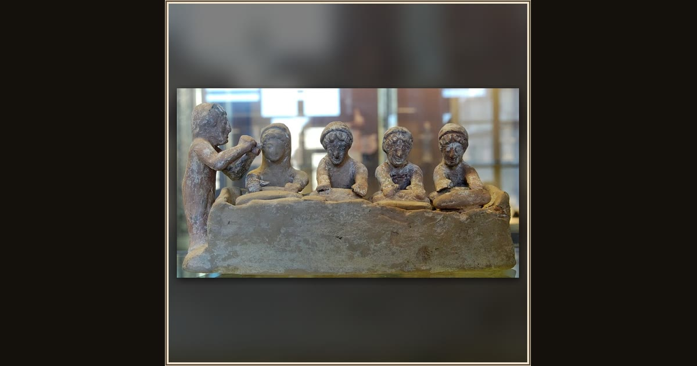

Group of figurines: women kneading dough with a flute-player
Boeotian Greek (unknown maker), from Thebes · c. 525–475 BCE · Musée du Louvre · Paris, France
Before dawn in Book 20, twelve serving-women grind grain in the palace, and the frailest, still bent over her millstone, prays for the suitors’ very last meal. This little clay group shows that exact world: women kneading dough while a flute-player keeps the r